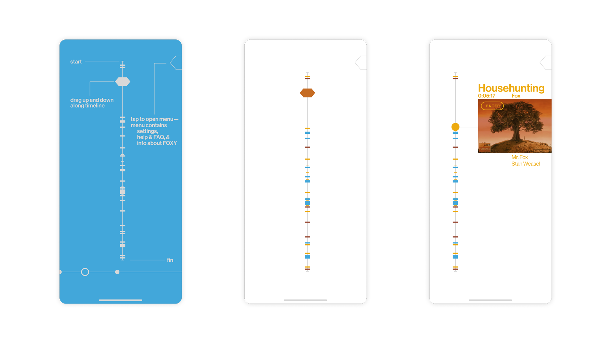
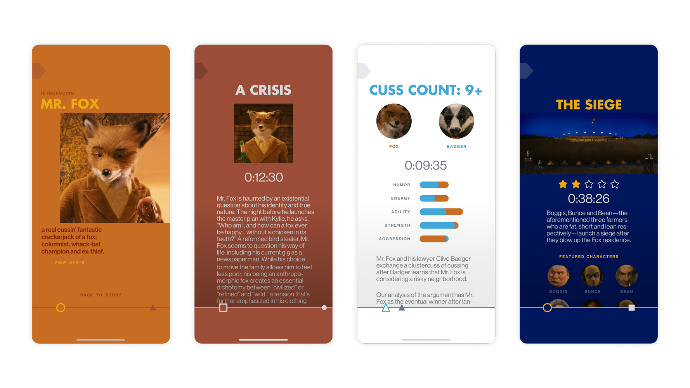

Interface Design
Mobile prototype
Timeline: 3 weeks
Tools: Sketch
Background
An homage to Wes Anderson's 2009 adaptation of Roald Dahl’s novel, Fantastic Mr. Fox, this app serves as an exhaustive guide to the film, highlighting important plot points, Mr. Fox's existential crises, and the use of "cuss."
Especially well known for his flat, geometric visual language and use of planimetric composition, Wes Anderson's take on Dahl's book presents a golden, autumnal landscape in which the various animal characters wrestle with the messiness of relationships and love.
Concepting + Results
I was interested in the bold, energetic use of color and simple navigation in games such as Two Dots and Pocket Frog, as Fantastic Mr. Fox similarly has an upbeat tone of voice and a gamelike pace. Drawing from the film's color palette, the landing screen juxtaposes orange hues with rich shades of blue, a pair of complementary colors that Anderson uses heavily throughout the movie. Detailed character introduction pages supplement the linear, summative view of the story.
The app uses iconography from the movie, such as a hexagonal button to drag along the central timeline, to annotate significant events and characters.
Screens from the prototype: the central timeline shifts to the side as the user drags the timestamp, a hexagon referencing Whack-Bat, down the plotline.
Detailed screens for specific characters, events, epiphanies, and arguments. The timeline rotates into horizontal position at the bottom of the screen, with icons corresponding to upcoming bits of information.
[VD: demo of Foxy. Initial onboarding screens demonstrate the app's structure.
Tapping around the app, the user comes across character introductions and scene breakdowns.
The menu bar also offers background info about the app's making.]
Insights + Room for Improvement
While a rewarding study in design systems, this app could've benefited from more standardization in gradients and a simplified color scheme. Explorations of a more immersive mode of navigation that's as dramatic as dragging could also help align the app with the movie stylistically, mimicking Anderson's whimsical signature style of compass point editing.